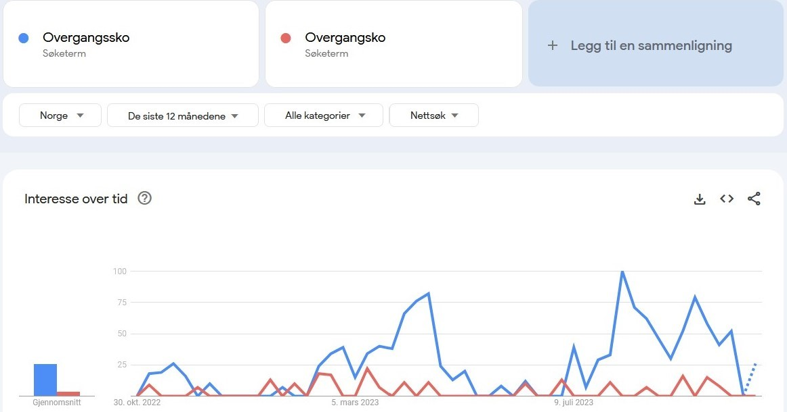
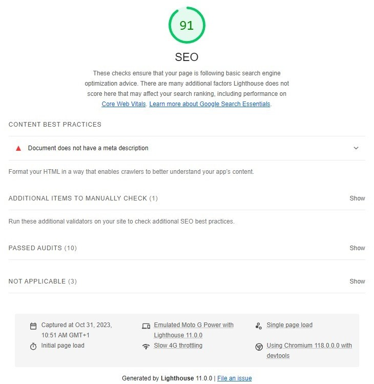
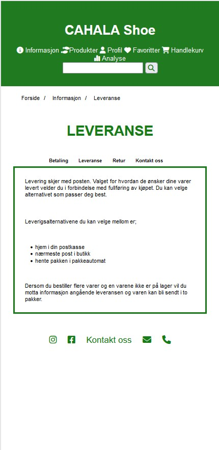

For å komme frem til ulike nøkkelord tenkte jeg igjennom hvilke ord som er
unik å ha med for en skobutikk generelt og så ut ifra målgruppen for nettsiden.
Ettersom butikken forløpig ikke har noen fysiske butikker, men bare en
nettside har jeg ikke tatt utgangspunkt i noe geografisk området. Etter å ha
skrevet ned de nøkkelordene jeg kom på sjekket jeg hvilke ord et par andre
konkurenter brukte på sin sider. Jeg brukte Google Trends, for å se hvilke
av ordene som folk søker mest etter i Norge. Jeg satte søkeresultatet til
å gjelde for "de siste 12 månedene". Dette gjorde jeg for å få med et
bredere søk, som er aktuelt og gjeldene for hele året. I tillegg valgte jeg
å ta med nøkkelord som firmanavn, bransje, tjenestetype, årstid etc.
Jeg kom frem til følgende nøkkelord for min målgruppe:
CAHALA Shoe
Nettbutikk
Skobutikk
Kampanje
Sko
Sandaler
Tøfler
Joggesko
Sneakers
Pensko
Bunadsko
Pumps
Ballerina
Tursko
Overgangssko
Vintersko
Gummistøvler
Boots
Støvletter
Støvler
Sommer
Vinter
Vår
Høst
Damesko
Herresko
Barnesko
Fire grafiske eksempler som viser søksresultater på noen av nøkkelordene

RESULTATER FØR UTBEDRING
LIGHTHOUSE
Nedenfor vises resultater etter gjennomført analyse via Lighthouse for
søkemotoroptimalisering (SEO) og universell utforming (UU).
Det er blitt gjort analyse av hver siden på nettsiden, men noen av sidene fikk
likt resultat og er derfor fremstilt her ved at de er slått sammen.
Analyse av søkemotoroptimaliseringen (SEO)
Analysen for alle tre sidene ga et utslag på 91%. Tilbakemelding
om at sidene ikke har metabeskrivelse, og at jeg burde formatere HTML-koden
på en måte som gjør det mulig for robotsøkeprogrammer å forstå innholdet bedre

Analyse for universell utforming (UU)
Forside og produktside
Analysen for forside og produktside ga et utslag på 100% på begge prinsippene.
Leveranse-/informasjonsside
Analysen ga et utslag på accessibility med 96% og 100% for best practices for
siden med leveranseinformasjon. For accessibility var tilbakemeldingen at
overskriftselementet ikke er i en sekvensielt synkende rekkefølge,
og ved å gjøre noe med det vil det kunne forbedre tastaturnavigasjonen på
nettsiden.
WEBAIM
Universell utforming (UU)
Forside
Ved analyse av forsiden fikk jeg; 1 varsling.
Varslingen er på teksten "kontakt oss" i "footer". Varslet sier at det
mulig er en overskrift, men at det ikke er et overskriftselement.
Produktside
Ved analyse av produktsiden fikk jeg;
4 varslinger. Det ene varslet er i "header", på navigasjonselemente "meny".
Varslet sier det er en overflødig lenke, og at tilstøtende lenker går til
samme URL. De tre andre varslingene er i "main" og "footer", og gjelder for
brødsmule navigeringen, "filtrer" og "kontakt oss".
Varslene sier at det mulig er en overskrift, men at det ikke er et
overskriftselement.
Leveranse-/informasjonsside
Ved analyse av produktsiden fikk jeg; 5 varslinger.
Tre av de er samme som for produktsiden; "meny" i "header", brødsmule navigeringen
og "kontakt oss" i "footer". Et nytt varsel er i undermenyen på "betaling". Varslet
sier at et overskriftsnivå er hoppet over. Siste varslet er i selve informasjons
teksten i "main", hvor varslet er at det mulig er en overskrift, men er ikke
et overskriftselement.
CHATGPT
Søkemotoroptimaliseringen (SEO)
Tabellen viser hvilke løsninger ChatGPT anbefalte ut ifra et SEO-perspektiv.
Tema
Forside
Produkt
Leveranse
Tittel og struktur
Tittelen er kort, men det er viktig å sikre at tittelen er beskrivende,
unik og representerer nøyaktig hva siden handler om
Gir indikasjon på at siden handler om produkter fra CAHALA shoe,
men bør inkludere flere søkeord og en mer spesifikk beskrivende tittel.
Gir indikasjon for siden, men bør være mer beskrivende og
inkludere nøkkelord.
Kildeattribusjoner
Fint at det er kildehenvist til ikoner og lenker. Nyttig for brukere
og viser en viss grad av kildeintegritet.
Det er bra at kilder for bildene er inkludert. Det viser respekt
for opphavsrettigheter og kan være til nytte for besøkende
Bra det er med kilder for ikoner og symboler. Det viser respekt for
opphavsrettigheter og kan være til nytte for besøkende
Reponsivt design og brukervennlighet
Å bruke Font Awesome-ikoner og legge til funksjoner som navigasjonsmeny
som reagerer på brukerens interaksjo er god praksis for mobillayout
Å implementere hamburgermenyen og ikonene fra Font Awesome er lurt
for å forbedre en god brukervennlighet
Implementering av hamburgermeny og bruk av Font Awesome-ikoner kan
forbedre brukeropplevelsen for mobil
URL-struktur
Knapper er satt til å peke på "#" eller bestemte sider som "produkt.html"
og "leveranse.html". Bruke av meningsfulle URL-er kan forbedre både
brukeropplevelsen og SEO.
Det ser ikke ut til at det er direkte implementert HTML-kode
Det er HTML-kode som ikke ser ut til å være direkte implementert. En meningsfull
URL-struktur med relevante nøkkelord kan forbedre søkemotoroptimaliseringen.
Semantisk HTML
Bruken av "header", "main" og "footer" er positiv for semantikken i
HTML-koden
Bruken av riktig struktur med "header", "main" og "footer" er god
praksis
Ved å bruke riktig struktur med sematisk HTML er positivt.
Optimalisering av bildeattributter
Det er ingen bilder i koden din
Det er flott at du bruker "alt"-attributtet for bildene
Du bruker ikke bilder på denne siden.
Feil i koden
Kan ikke se noen åpenbare feil i koden, men det kan være lurt å
validere HTML-koden
Ikke beskrevet
Ikke beskrevet
Bruk av JavaScript
Sørg for at navigasjonsmenyen fungere tilfredsstillende for
brukere uten JavaScript
Selvom Javascript er deaktivert, er det lurt å sørge for at nettstedet
fungerer tilfredsstillende, fordi søkermotoren stort sett ikke
indekserer JavaScript-avhengig innhold
Sørg for at nettstedet fungerer tilfredsstillende selv når
JavaScript er deaktivert
Tekstinnhold
Siden ser ut til å mangle mye tekstinnhold
Det er positivt å se at du har inkludert informasjon om produktene
som størrelse, farge, spesifikasjoner, lagerbeholdning og pris
Du har inkludert detaljer rundt levering og alternativer, noe som er
positivt. Det kan være fordelaktig å inkludere enda mer spesifikk
informasjon om forsendelse, betaling og retur. Det gir et mer
detaljert bilde av tjenestene
Sosiale medier og kontakt
Ikke beskrevet
Bruken av sosiale medier-ikoner og kontaktinformasjon i footer er
positivt, og det kan øke brukerens engasjement.
At det er inkludert ikoner for sosiale medier og kontaktinformasjon
i footer er positivt for brukerengasjement.
Universell utforming (UU)
Tabellen viser hvilke løsninger ChatGPT anbefalte ut ifra et UU-perspektiv.
Tema
Forside
Produkt
Leveranse
Semantisk HTML
Strukturen virker å være brukervennlig med riktig bruk av HTML-elementer
(header, main, footer osv.). Mangler imidlertid semantisk betydning for
enkelte av elementene, for eksempel bruk av "article" for knapper,
som kanskje bør vært "div" eller andre semantiske elementer.
Koden bruker HTML-elementer på en ganske semantisk måte.
Det er klart definerte seksjoner som "header", "main" og "footer".
Bruk riktig HTML-struktur for å representere innholdet.
For eksempel, bruk av riktige overskriftsnivåer (h1, h2 osv.) for å
organisere informasjonen hierarkisk.
Tilgjenglighet
Bruken av Font Awesome-ikoner er bra, men det mangler tekstbaserte
beskrivelser (alt-tekst) for ikonene. Dette kan gjøre siden utilgjengelig
for synshemmede som bruker skjermlesere. Noen av knappene har
onclick-hendelser uten tilstrekkelig alternativ for tastaturnavigasjon
eller skjermlesere, noe som kan redusere tilgjengeligheten.
Gjennomgå og sikre at nettstedet følger retningslinjene fra Web Content
Accessibility Guidelines (WCAG) for å sikre bredere tilgjengelighet.
Elementer som vises etter å ha klikket på hamburger-ikonet er visuelt
skjulte som standard. Dette kan være vanskelig for brukere som er
avhengige av skjermlesere eller tastaturnavigasjon. Sørg for at disse
elementene er tilgjengelige og kan aktiveres uten avhengighet av musen
eller visuell interaksjon.
Navigasjon
Mobilmenyen er implementert med et "hamburger-ikon", men det er viktig å
teste om den fungerer godt på alle enheter og om den er enkel å bruke,
spesielt for personer med begrensede evner til å navigere på en nettside.
Lenker som "Meny", "Profil", "Favoritter", etc., kan forbedres ved å
inkludere mer beskrivende tekst i tillegg til ikonene for å være mer
tilgjengelig for skjermlesere og andre brukere som er avhengige av
tekstbasert navigasjon.
Sørg for at lenker og navigasjonselementer har beskrivende og
meningsfulle navn for å hjelpe brukere med å forstå hvor lenkene vil
føre dem
Farge og kontrast
Fargebruken virker å være fornuftig, men kontrasten mellom teksten og
bakgrunnen må evalueres for å sikre tilstrekkelig lesbarhet for brukere
med synshemninger.
Fargene brukt i ikonene i navigasjonsfeltet og andre steder kan være
vanskelig å se for noen brukere, spesielt de med synshemninger. Å sikre
tilstrekkelig kontrast mellom tekst og bakgrunn kan være nyttig.
Sjekk kontrastforholdet mellom tekst og bakgrunn, spesielt for brukere
med synshemminger. Noen brukere kan ha problemer med å lese teksten hvis
kontrasten ikke er tilstrekkelig høy. For eksempel, sørg for at
tekstfargen og bakgrunnsfargen har tilstrekkelig kontrast.
Responsivitet
Teksten og elementene på siden bør være tilstrekkelig responsiv for å
sikre god lesbarhet på alle enheter. Det kan være lurt å evaluere om
teksten skal skaleres eller om elementene trenger justering for bedre
bruk på mindre skjermer.
Selv om det er et forsøk på responsivt design ved bruk av en
hamburger-ikon for navigasjon på mindre skjermer, er det ikke nok til å
garantere en god mobilbrukeropplevelse. Det kan være nødvendig med
ytterligere tilpasning for små skjermer.
Sjekk at nettstedet er responsivt og fungerer godt på ulike enheter,
inkludert mobil, nettbrett og skjermlesere. Test navigasjonen og
brukervennligheten på forskjellige skjermstørrelser.
JavaScript
Bruken av JavaScript til å lage en responsiv navigasjonsmeny er bra,
men det er viktig å sjekke at det fungerer feilfritt på alle enheter og
er tilgjengelig for alle brukere.
Unngå å bruke skjult tekst eller skjulte navigasjonselementer som bare
vises ved bruk av CSS eller JavaScript. Dette kan være problematisk for
skjermlesere og kan være forvirrende for brukere.
Ikke beskrevet
Alternativ tekst til bilder og ikoner
Ikke beskrevet
Alle bilder har alternative tekster (alt-attributter), som er positivt
for tilgjengeligheten.
Det ser ut til at du bruker Font Awesome-ikoner. Å inkludere alternative
tekster (alt-tekst) for disse ikonene er viktig for brukere som er
avhengige av skjermlesere. Alt-tekst gir kontekst og forståelse av hva
ikonene representerer.
Bruk av ikoner
Ikke beskrevet
Bruken av ikoner er tydelig og kan forbedre brukeropplevelsen for visse
handlinger og navigasjon.
Ikke beskrevet
Skjermleservennlighet
Ikke beskrevet
Gjennomgå koden for å sikre at skjermlesere kan tolke innholdet på en
meningsfull måte. Bruk semantisk HTML og gi beskrivende navn på elementer.
Ikke beskrevet
Skriftstørrelsejustering
Ikke beskrevet
Teksten kan være for liten for enkelte brukere. Å tillate
skriftstørrelsejustering via nettleserinnstillinger eller ved å gi
mulighet for å øke teksten på nettstedet kan forbedre tilgjengeligheten.
Ikke beskrevet
Tastaturnavigasjon
Ikke beskrevet
Det ser ikke ut til å være tastaturvennlig navigasjon for personer som
ikke bruker mus eller berøringsskjerm.
Sørg for at brukere kan navigere på nettstedet ved hjelp av tastaturet.
Dette er spesielt viktig for personer som ikke kan bruke musen.
Språkidentifisering
Ikke beskrevet
Ikke beskrevet
Selv om HTML-avsnittet angir engelsk som språket "en"-attributt i
html lang="en", er det viktig å være konsistent i språkbruken på hele
nettstedet for å hjelpe skjermlesere og andre språkstøttende teknologier.
Sammenligning av resultatene
Sammenligning av resultatene fra SEO-analyse med anbefalinger
om forbedring.
Analyse
Resultat
Lighthouse
ChatGPT
SEO
Tittel og struktur
Sidene har ikke metabeskrivelse
Tittelen er kort. Brø bedre tittel-og metabeskrivelse. Bør inkludere
flere søkeord
Responsivt design og brukervennlighet
Ingen bemerkelse
Ikonene bør implementeres
URL-struktur
Ingen bemerkelse
URL-strukturen ser ikke ut til å være direkte implementert.
Knapper er satt til å peke på "#" eller bestemte sider som
"produkt.html" og "leveranse.html"
JavaScript
Ingen bemerkelse
Sørg for at navigasjonsmenyen fungere tilfredsstillende for brukere
uten JavaScript, da søkermotorer som Google kan ha problemer med å
indeksere innhold som er avhengig av JavaScript
Tekstliginnhold
Ingen bemerkelse
Forsiden: bemerkelse på å mangle tekstliginnhold.
Leveranse: kan være fordelaktig å inkludere enda mer spesifikt
informasjon om forsendelse, betaling og retur for å gi et mer
detaljert bilde av tjenestene
Sammenligning av resultatene fra UU-analyse med anbefalinger
om forbedring.
Analyse
Tema
Lighthouse
ChatGPT
Webaim
UU
Semantisk HTML
Leveranse/informasjonsiden: har overskriftselementet som ikke er i
en sekvensielt synkende rekkefølge.
Mangler semantisk betydning for enkelte av elementene, for eksempel
bruk av "article" for knapper, som kanskje burde vært "div" eller
andre semantiske elementer, og bruk av riktige overskriftsnivåer
for å organisere informasjonen hierarkisk.
Flere steder hvor det er en overskrift, men at det ikke er et
overskriftelement, og et overskriftsnivå hoppet over.
URL-struktur
Ingen bemerkelse
Ingen bemerkelse
Produktsiden: på navigasjonselemente "meny" er det en overflødig lenke,
og tilstøtende lenker går til samme URL
Tilgjenglighet
Ingen bemerkelse
Noen av knappene har onclick-hendelser uten tilstrekkelig alternativ
for tastaturnavigasjon eller skjermlesere. Elementer som vises etter
å ha klikket på hamburger-ikonet er visuelt skjulte som standard
Ingen bemerkelse
Navigasjon
Ingen bemerkelse
Lenker som "Meny", "Profil", "Favoritter", etc., kan forbedres ved
å inkludere mer beskrivende tekst i tillegg til ikonene
Ingen bemerkelse
Farge og kontrast
Ingen bemerkelse
Sjekk kontrastforholdet mellom tekst og bakgrunn
Ingen bemerkelse
Responsivitet
Ingen bemerkelse
Sjekk at nettstedet er responsivt og fungerer godt på ulike enhetene
Ingen bemerkelse
JavaScript
Ingen bemerkelse
Unngå å bruke skjult tekst eller skjulte navigasjonselementer som
bare vises ved bruk av CSS eller JavaScript
Ingen bemerkelse
Alternativ tekst for ikoner
Ingen bemerkelse
Det mangler tekstbaserte beskrivelser (alt-tekst) for ikonene
Ingen bemerkelse
Skjermleservennlighet
Ingen bemerkelse
Gjennomgå koden for å sikre at skjermlesere kan tolke innholdet
Ingen bemerkelse
Skriftstørrelsejustering
Ingen bemerkelse
Produktsiden: teksten kan være for liten for enkelte brukere
Ingen bemerkelse
Tastaturnavigasjon
Ingen bemerkelse
Produktsiden: det ser ikke ut til å være tastaturvennlig
navigasjon for personer som ikke bruker mus eller berøringsskjerm
Ingen bemerkelse
Språkidentifisering
Ingen bemerkelse
HTML-avsnittet angir engelsk som språket "en"-attributt i
html lang="en", det viktig å være konsistent i språkbruken på
hele nettstedet
Ingen bemerkelse
Etter å ha sammenligninget resultatene ser jeg at ChatGPT har reagert på
flere ting som ikke Lighthous påengterte ut i fra SEO-perspektiv.
Blant annet ikoner,URL'er og JavaScript ikke er optimalt implementert.
I tillegg reagerte ChatGPT på at det var lite tekstliginnhold, noe Lighthouse
ikke ga noe bemerkelse på.
Ut ifra et UU-perspektiv var det også der flere til ChatGPT reagerte på som
ikke Lighthouse og Webaim ga utslag på. Blant annet det samme som ved
SEO-analysen med ikoner, JavaScript og URL-struktur som ikke er optimalt
implementert, men også at det manglet alternativ tekst til ikonene,
tekststørrelsen kan være for liten, språkidentifiseringen som var satt til
engelsk, men innholdet er skrevet på norsk bokmål og tastaturnavigasjon som
så ut til å mangle på en av sidene.
RESULTATER ETTER UTBEDRING
Ut i fra analysene ble det poengtert flere forhold som burde sjekkes opp
og det ble kommentert med anbefalinger for utbedringer. Nedenfor er det listet
opp de forbedringene som er blitt gjort og hva som er blitt sjekket opp:
Tittel: endret "title" til mer beskrivende og til å innholde nøkkelord på
alle sidene.
Metabeksrivelse: lagt til metabeskrivelser; keywords og description på alle
sidene.
JavaScript: fjernet all JavaScript-kode. Ettersom det med nettsidens struktur
ikke er laget for å ha med hamburgermeny i utgangspunktet. Det var heller
ikke et krav i utformingen, så jeg så ikke hensikten med å ha den funksjon med.
Tekstliginnhold: lagt til mer tekst på forsiden.
HTML-struktur: sjekket opp HTML-strukturen for knappene på forsiden.
Etter å ha spurt ChatGPT om veiledning, ble jeg oppmerksom på at "button" ikke
er avhenig av foreldreelement. Derfor fjernet "article"som var satt rundt
hver "button".
Overskriftnivåer: sjekket over alle sidene på de punktene hvor analysen mente
det var overskriftnivåer uten overskriftelement. Ble ikke gjort endringer,
ettersom det er "p"-tagger med skrift og allerede en overskrift som har "h5"-tagg.
Alternativ tekst til ikonene manglet: endret på hele navigasjonsmenyen,
slik at ikonene henger sammen med teksten. Lagt til "aria-label" på alle stedene
det brukes ikoner.
Responsivitet på design og tekst: gått over alle sidene i "style.css" og gjort
små justering for å få tekst, bilder og tabeller til å være mer responsive. Endret
blant annet alle font-size verdiene til "vw".
Språkidentifiseringen: alle sidene sto med "html lang="en". Endret på alle sidnene
til "nb" i stedenfor. Ettersom innholdet på siden er skrevet på norsk bokmål og
ikke engelsk.
Her er en oversikt over ytterligere endringer som er gjort for å forbedre
nettsiden ut i fra SEO- og UU-perspektiv, med bakgrunn fra hva vi har lært og
hatt om i forlesning.
Alle sidene: Satt inn "form" med "input" for å få et søkefelt i "header"
Alle sidene: lagt inn "skip to content"
Forsiden: endret på teksten til knappeboksene slik at det ikke bare står et ord,
men at det skal lede kjøperen til å forstå at det er knapper og ikke bare en boks
med skrift. Ettersom kjøper på trykke på knappen for å komme til produktsidene.
Produkt, leveranse og analyse: endret på den stistrukturen jeg hadde laget til en
"breadcrumb"
Endret på fargen på overskriftene på produkt-, leveranse og analysesiden
fra sort til grønn. Slik at det er en helhet gjennom hele nettbutikken, og
det nå er ligt utseende med forsiden.
Nedenfor følger min begrunnelse for hvorfor utbedring ikke er blitt utført til
tross for anbefalinger om det fra analaysene:
ChatGPT: knapper er satt til å peke på"#".
- Det er ikke blitt utbedret fordi det pr. nå ikke er opprettet mer
en tre sider, for å ha en fullverdig visuelt sett navigasjonsmeny
å fremvisninge er det bare fektivtt linket til "#" enn så lenge.
Noe som ikke kan utbedres før alle sidene er opprettet.
ChatGPT: inkludere enda mer spesifikt informasjon om forsendelse,
betaling og retur på leveranse/informasjonssiden
- Det er allereder med, bare ikke optimalt utført pr. nå.
ChatGPT: anbefalte å sjekke farge og kontrastforholdet.
- Det er blitt gjort med Lighthouse og Webaim. Ingen av de to ga
noe varslinger på at det burde utbedres, derav er det ikke gjort
noen endringer med tanke på det.
ChatGPT: mente produktsiden så ut til å ikke ha tastaturvennlig
navigasjon
- Det har jeg sjekket opp og testet, finner ikke noe avvik ved det.
ChatGPT: optimalisere onclick-hendelser.
- Sjekket det opp og det gjelder knappen for forsiden hvor det er satt "#"
fordi det pr. nå ikke er laget sider for barnesko, damesko og herresko.
ChatGPT: anbefalte å sjekke skjermleservennligheten.
- Det gjøres i neste steg under forbedring av nettsiden. Gå ned til skjermleserkompatibilitet skjermleserkompatibilitet
for å lese utfyllende om resultatet etter utført test skjermleservennligheten for alle sidene.
Bildeeksempler på før og etter utbedring
Alle bildeeksemplene er tatt i utgangspunkt i mobiloppsett, med tanke på mobil first
prisnippet. Mobiloppsett i disse eksmeplene er med oppsett for iPhone 12/13 Pro Max
Forsiden
Før: ovenfor ser man at det store sekjsonene/knappene midt på siden er smale
og ikke optimalt resposivt design. Header delene er veldig høy, ikoner og tekst henger
ikke sammen og det er ikke søkefelt. Tekstliginnhold er det ikke og knappene sier
lite om at de skal trykkes på for å se produktene
Produktsiden
Før: ovenfor ses det at breadcrumb er ikke optimali. Det samme går igjen
for header som på forsiden, den er veldig høy, ikoner og tekst henger ikke sammen
og det mangler søkefelt. Overskriften var heller ikke responsiv.
Leveranse
Før: ovenfor ser man det samme går igjen for header også på denne siden
naturlig nok. Overskriften og undermenyen var ikke repsonsive typopgrafi.

Metadata
Før: utgangspunktet før det er lagt til noe metadataEtter: her er et eksmepel på hvordan oppsettet er etter at metabeskrivelse
er lagt til
Aria-atteributter
Før: utgangspunktet før det er lagt til aria-atteributterEtter: her er et eksmepel på hvordan oppsettet er etter at aria-atteributter
er lagt til
Microdata
Før: utgangspunktet før det er lagt til microdataEtter: her er et eksmepel på hvordan oppsettet er etter at microdata
er lagt til
SEO og UU resultater etter utbedring
Forside
Nedenfor ses resultatene av UU-analyse med Lighthouse etter forbedring av siden
Nedenfor ses resultatene av SEO-analyse med Lighthouse etter forbedring av siden
Nedenfor ses resultatene av analyse med Webaim
Produktside
Nedenfor ses resultatene av UU-analyse med Lighthouse etter forbedring av siden
Nedenfor ses resultatene av SEO-analyse med Lighthouse etter forbedring av siden
Nedenfor ses resultatene av analyse med Webaim
Leveranse-/informasjonsside
Nedenfor ses resultatene av UU-analyse med Lighthouse etter forbedring av siden
Nedenfor ses resultatene av SEO-analyse med Lighthouse etter forbedring av siden
Nedenfor ses resultatene av analyse med Webaim
Oppsummering av resultatene etter utbedring
Alle sidene hadde en SEO på 91% før utbeding, i etterkant av utbedingen har SEO for
forsiden økt til 100%, mens SEO for produktsiden er gått til 92 % og for leveranse-
/informasjonssiden er fortsatt på 91% med bemerkelse om at det brukes ikke lesbar
skriftstørrelse
Forsiden og produktsiden hadde 100% på UU-analysen før forbedring.
Informasjonssiden fikk 96% på accessibility og 100% på best practices. For Forsiden
og leveranse-/informasjonssiden har det blitt endringer til det negative etter
utbedring. Forsiden har gått ned til 94% på accessibility, med bemerkelsen
skjemaelementer uten tilknyttende etiketter. Leveranse-/informasjonssiden har
gått ned til 91% på accessibility med samme bemerkelse som for forsiden, men også
overskriftelementer er ikke i en sekvensielt synkende rekkefølge.
Alle sidene har fått kontrastfeil etter utbedring. Det anvises ikke hvor, og det
er ikke gjort noe med skrift- eller bakgrunnsfargen siden testen før utbedring.
Alle sidnne har også fremdeles varslinger, noen av dem er samme som før utbedring,
men som er blitt sjekket opp, og skal ikke være noe å gjøre med. Samt at ny er
tilkommet for alle sidene; navigasjon for søk.
Skjermleserkompatibilitet
Skjermleser fungerte ikke helt optimalt. Den leste ikke opp det tekstlige innholdet
på sidene og sa ikke noe om det som er angitt i "footer". For produktsiden sa den
ingenting om at det er en filtrerings mulighet, og for siden med informasjon om
leveranse ble undermenyen med informasjon om betaling, retur etc. ikke beksrevet.
Tastaturnavigasjon
Tastaturnavigasjon virker optimalt med tab, enter og piltastene opp og ned på siden.
I tillegg til at det navigeres rundt på siden blir det markert rundt der man er.